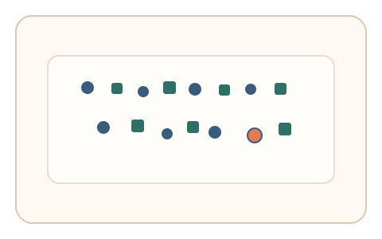
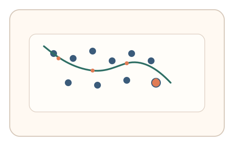
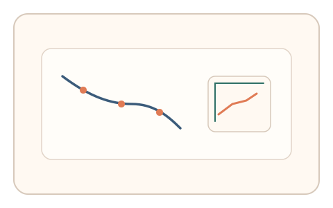

#18
视觉思考范式：空间/结构/直觉
已扩展
视觉搜索路径签名
记录密集图形中的搜索路径与停留分布，以粗扫到局部细扫的层级搜索模式区分脚本。
概念原文
在密集图形中寻找特定目标，记录搜索路径与停留点分布。人类通常呈“粗扫—局部细扫”的层级搜索模式。
验证的是“搜索路径形态”而不是识别结果。
研究背景
视觉搜索任务中，人类通常先进行全局扫视，再进入局部细扫，形成具有层级性的扫描路径与停留点分布。基于这一规律，可将搜索路径的形态特征作为验证信号，避免单纯依赖答案正确与否。
核心机制
- 在密集图形中嵌入目标元素并设定时间窗口。
- 要求用户找到目标并点击，记录鼠标搜索路径与停留点。
- 提取路径的层级性、回访率与停留分布。
- 与人类搜索模式区间比对，判定真实性。
用户流程
- 步骤 1：用户看到密集图形与目标提示。
- 步骤 2：用户在画面内搜索并点击目标。
- 步骤 3：系统分析搜索路径并输出判定。
判定信号
扫视长度与停留点层级结构
人类搜索常呈现先长程粗扫再短程细扫的层级特征。
回访率与路径熵
真实搜索存在有限回访与非线性路径，脚本常过度规则或过度随机。
判定逻辑
计算搜索路径的层级性指标、停留点密度与回访率，要求位于人类统计范围；过度直线化或完全随机化均判异常。
对抗面
- 脚本使用显著性模型生成伪搜索路径
- 重放真实用户的搜索轨迹
防御与缓解
- 随机化目标位置与干扰布局，降低重放价值
- 加入微时序信号（速度波动与停顿）进行多信号判定
- 在搜索过程中动态切换目标，提高脚本难度
可达性与风险
提供高对比与放大模式，并允许替代通道（列表选择或键盘导航），避免低视力用户被排斥。
- 密集搜索可能带来较高认知负担
- 设备尺寸与输入设备差异影响路径特征
可视化状态

状态 1：密集搜索任务
目标嵌入在高密度元素中。

状态 2：搜索路径
记录搜索轨迹与停留点分布。

状态 3：路径判定
分析层级结构与回访率形成判定。
参考资料
Visual search
说明视觉搜索任务的基本范式。
Saccade
说明扫视与停留点的行为特征。